01

Graph AI
We explore next-generation graph neural network architectures, and study how knowledge graphs and foundation models can be combined to enable structured, generalizable reasoning.
The Hong Kong Polytechnic University
We develop graph and world models for AI-driven scientific discovery,
with a focus on biology and medicine.
Based in
Hong Kong Hung Hom · DSAI · PolyUWhere structured machine intelligence meets the complexity of biological systems.
We work across deep learning and biomedicine to build systems that reason over relationships, learn dynamics, and accelerate discovery.
We explore next-generation graph neural network architectures, and study how knowledge graphs and foundation models can be combined to enable structured, generalizable reasoning.
We build world models that learn the dynamics of complex systems from data, including virtual cells that simulate cellular responses to perturbations.
We apply AI to problems in biology and medicine, from single-cell analysis to disease understanding and therapeutic discovery.

Principal Investigator
Tenure-track Assistant Professor
Department of Data Science and Artificial Intelligence
Ziyang Liu received his PhD from Tsinghua University and completed his postdoctoral training at Harvard Medical School. He joined the Department of Data Science and Artificial Intelligence at The Hong Kong Polytechnic University in November 2026 as a tenure-track Assistant Professor. His research focuses on graph machine learning, world models, and AI for biomedicine.
PhD
PhD
Master
Master
Intern
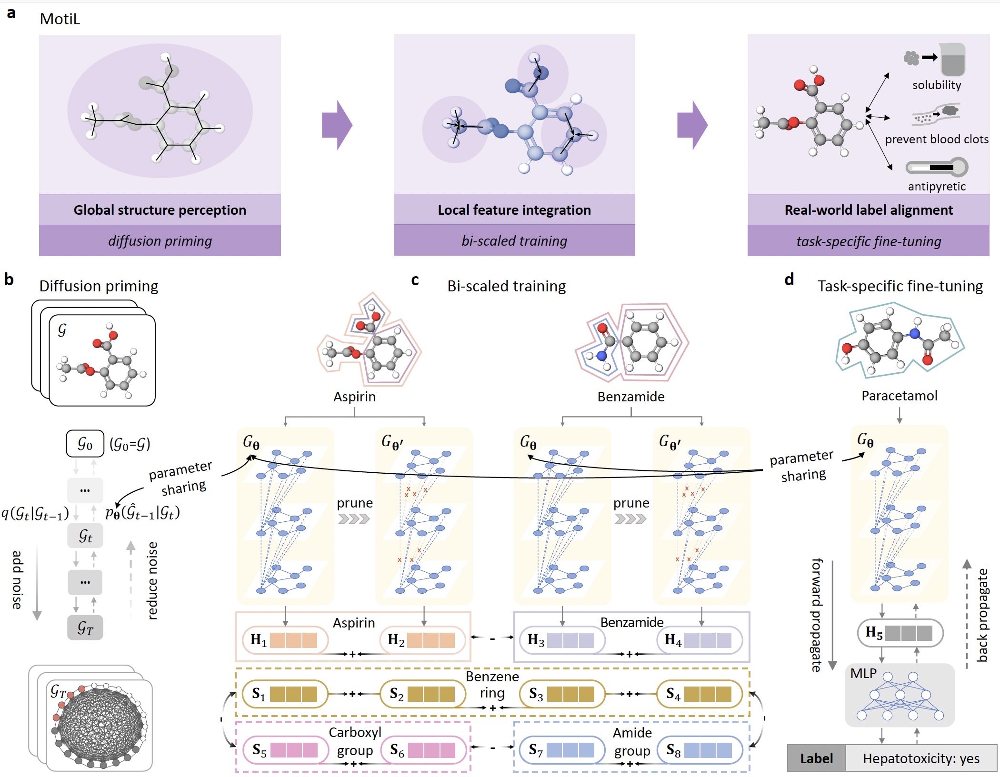
MotiL learns chemically consistent representations for both small molecules and protein macromolecules by preserving scaffold and whole-molecule structure.
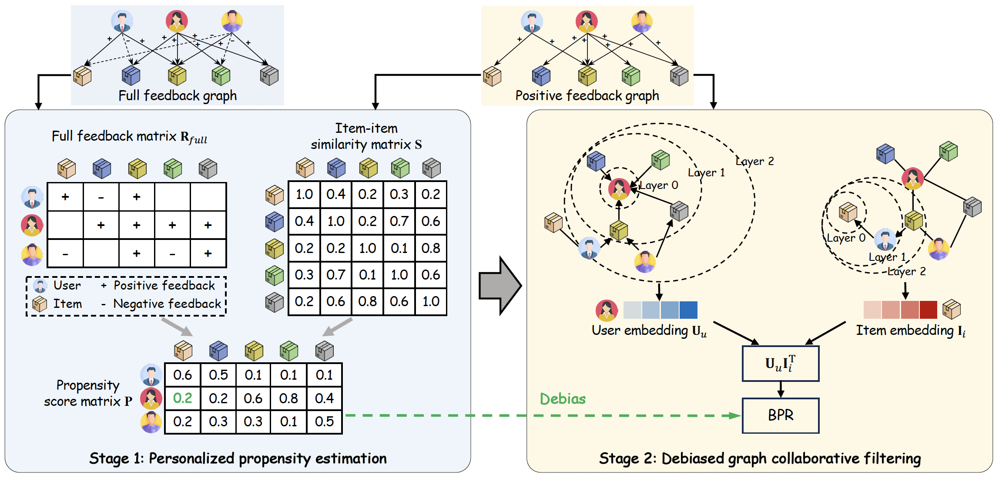
A training-free framework that estimates exposure probabilities to improve recommendation accuracy, fairness, and computational efficiency.
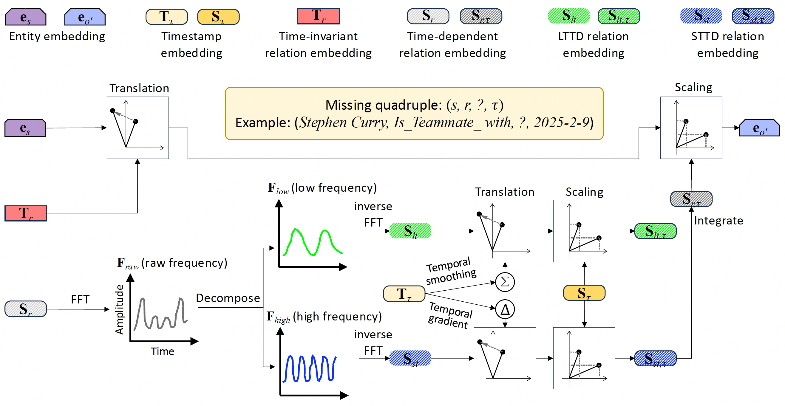
Capturing long-term and short-term temporal dynamics by decomposing relations into low-frequency and high-frequency components.
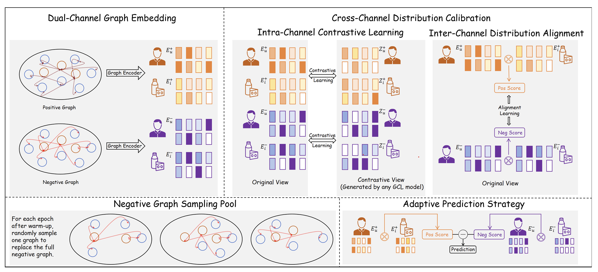
A model-agnostic framework that uses negative feedback through dual-channel modeling, cross-channel calibration, and adaptive prediction.
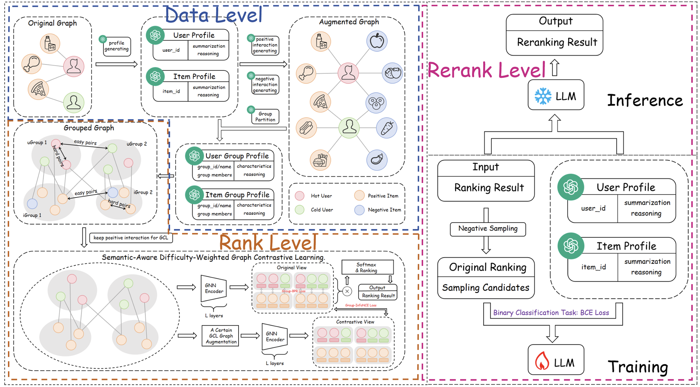
Integrating language models into graph contrastive learning across data, rank, and rerank levels.
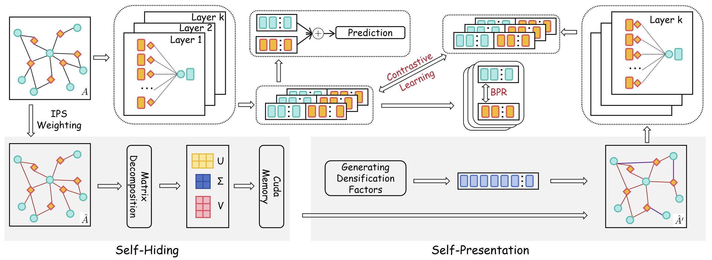
Exposure-aware self-presentation and self-hiding for debiased recommendation.
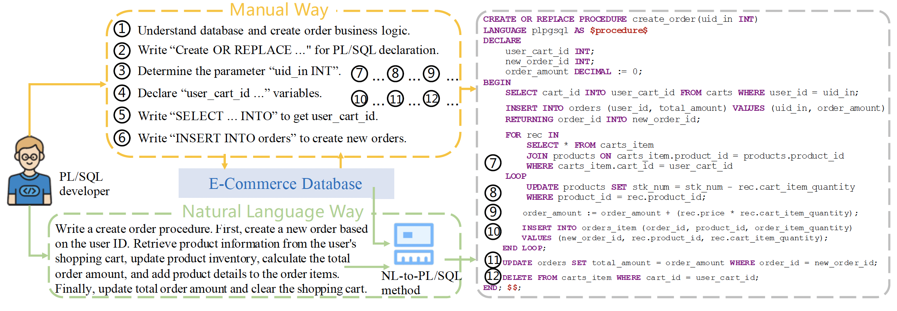
Pretrained language models designed for translating natural language to PL/SQL.
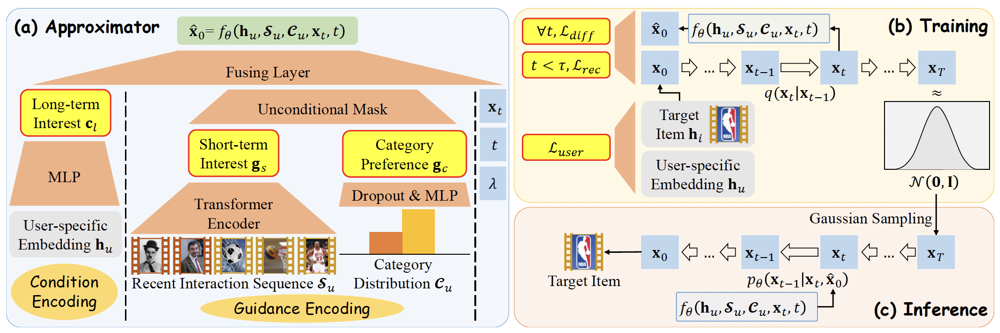
Guided conditional diffusion for modeling disentangled and personalized user interest distributions.
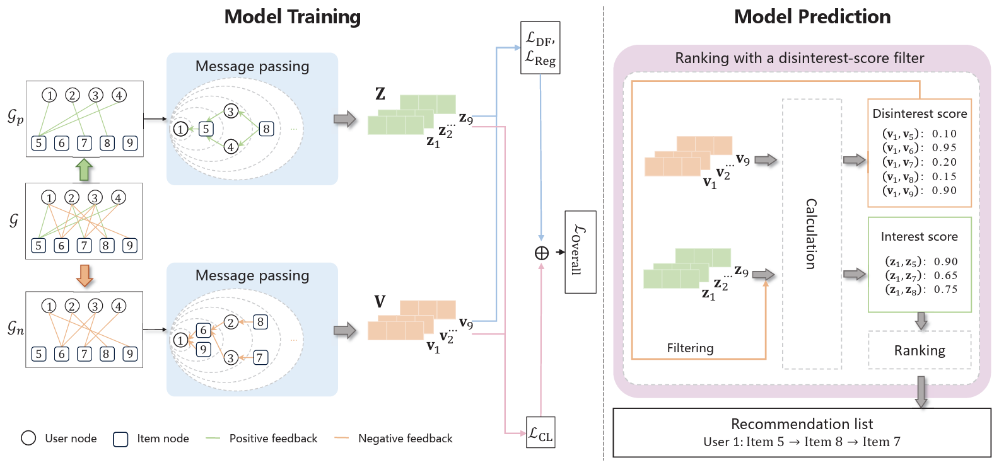
Dual embeddings and contrastive learning unify positive and negative feedback in graph recommendation.
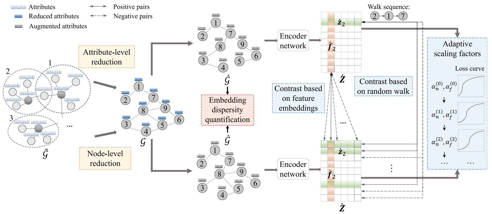
Efficient graph reduction and adaptive dual-level contrastive loss improve both speed and embedding quality.
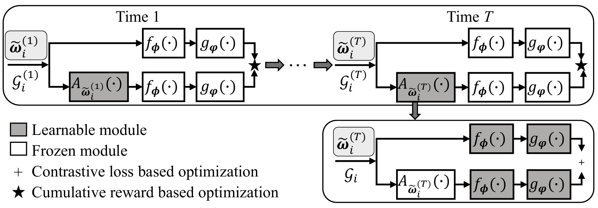
Graph augmentation as a Markov process for meaningful and efficient contrastive views.
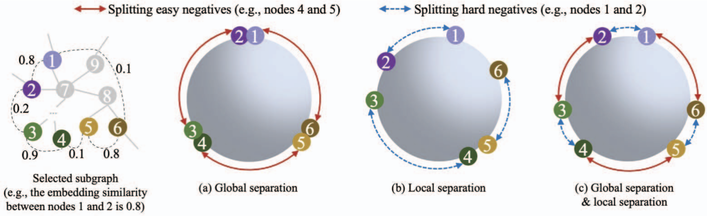
Adaptive contrastive loss temperatures for stronger embeddings and more efficient training.
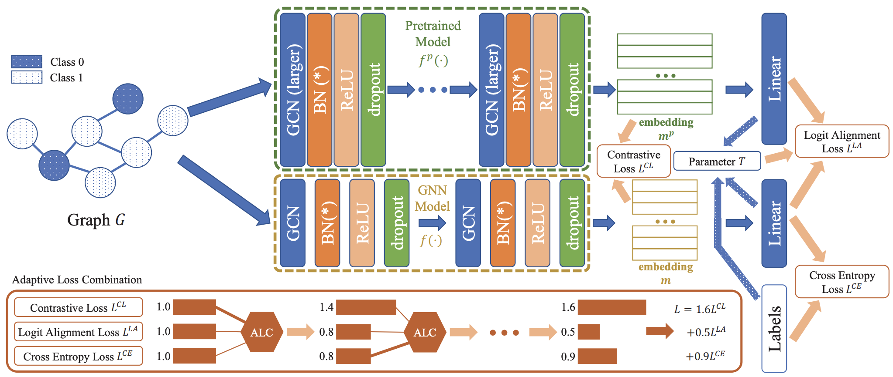
Dynamic integration of inter-model and intra-model hidden insights with adaptive loss combination.
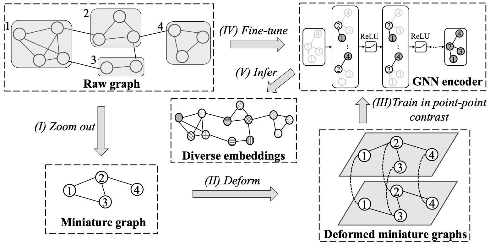
Graph zoom-out and point-to-point contrastive learning accelerate unsupervised representation learning.
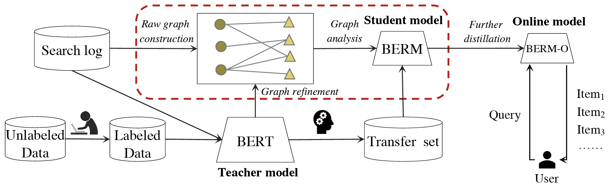
Knowledge distillation with higher-order relevance modeling for efficient product search.
04 · Projects
New projects will be added as the lab grows.
News, opportunities, and updates from GiB Lab.
GiB Lab is recruiting Master's and PhD students and research interns.
Monthly salary: HKD 18,000–20,000. Support is available for applications to Hong Kong government scholarship schemes. How to apply →We are recruiting Master’s and PhD students, research assistants, and interns. The monthly salary is HKD 18,000–20,000, and we support applications to Hong Kong government scholarship schemes. If you are interested in graph learning, world models, or AI for biomedicine, send your CV and a short statement of research interests.
liuziyang0222@gmail.com